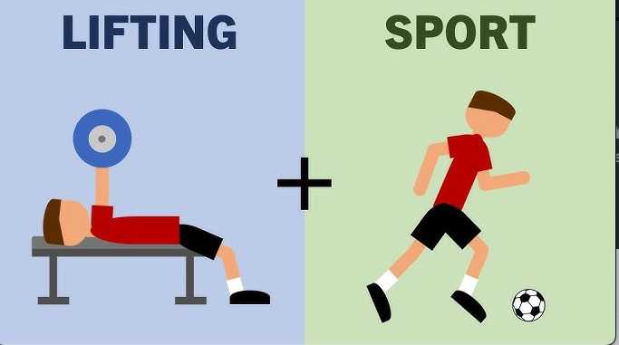

import tensorflow as tf
import numpy as npPreviously, we were exploring basics of tensorflow mathematical and arthimetic operations. In this article we will explore few important functions that would be helpful in our modelling journey.


1. Stack & Concat
We will explore through examples when we can use stack and concat.
Initially we will explore the syntax of stack and concat and then understand its operations. Based on the output of these operations we will deduce how to use them.
1.1 Syntax Exploration
list1 = [1,3,4]
list2 = [2,4,5]
list3 = [3,5,6]
list4 = [4,6,7]
[list1, list2, list3, list4][[1, 3, 4], [2, 4, 5], [3, 5, 6], [4, 6, 7]]tf.stack([list1, list2, list3, list4])<tf.Tensor: shape=(4, 3), dtype=int32, numpy=
array([[1, 3, 4],
[2, 4, 5],
[3, 5, 6],
[4, 6, 7]], dtype=int32)>tf.concat([list1, list2, list3, list4], axis=0)<tf.Tensor: shape=(12,), dtype=int32, numpy=array([1, 3, 4, 2, 4, 5, 3, 5, 6, 4, 6, 7], dtype=int32)>stack command is stacking the list where as concat has unrolled the list and concatened the elements.
1.2 Exploring the Outputs
list1 = tf.constant([1,3,4])
list2 = tf.constant([2,4,5])
list3 = tf.constant([3,5,6])
list4 = tf.constant([4,6,7])
print(list1.shape)
print(tf.stack([list1, list2, list3, list4]).shape)
print(tf.concat([list1, list2, list3, list4], axis=0).shape)(3,)
(4, 3)
(12,)From this output we can deduce that when we are converting the same list into EagerTensor the output remained the same. Since, the dimensions of the input remanined the same.
list1 = tf.constant([1,3,4],shape=(1,3))
list2 = tf.constant([2,4,5],shape=(1,3))
list3 = tf.constant([3,5,6],shape=(1,3))
list4 = tf.constant([4,6,7],shape=(1,3))
print(list1.shape)
print(tf.stack([list1, list2, list3, list4]).shape)
print(tf.concat([list1, list2, list3, list4], axis=0).shape)(1, 3)
(4, 1, 3)
(4, 3)list1 = tf.constant([1,3,4])
print(list1)
list1 = tf.constant([1,3,4],shape=(1,3))
print(list1)tf.Tensor([1 3 4], shape=(3,), dtype=int32)
tf.Tensor([[1 3 4]], shape=(1, 3), dtype=int32)From this output we can deduce that when we convert from tensor 1D to 2D the difference in operations is conspicious.
stack stacks the tensors one above the other, while concat combines the tensor on user-defined axis.
On this learning, we can use these commands in below scenario as per my comprenhension.
If we have multiple images and we want to stack them into a single variable we use stack. On the other side concat can we used to combined already pre-available stacked images in a variable.
list1 = tf.random.normal((24,24,3))
list2 = tf.random.normal((24,24,3))
list3 = tf.random.normal((24,24,3))
list4 = tf.random.normal((24,24,3))
tf.stack([list1, list2, list3, list4]).shapeTensorShape([4, 24, 24, 3])In the above toy example we are stacking four images of 24X24X3 dimensions using tf.stack
list1 = tf.random.normal((4,24,24,3))
list2 = tf.random.normal((4,24,24,3))
list3 = tf.random.normal((4,24,24,3))
list4 = tf.random.normal((4,24,24,3))
tf.concat([list1, list2, list3, list4], axis=0).shapeTensorShape([16, 24, 24, 3])Further, we are combining the stacked images into a larger stack of 16 images.
2. UnStack
Unstack is straightforward and simple
list1 = tf.random.normal((24,24,3))
list2 = tf.random.normal((24,24,3))
list3 = tf.random.normal((24,24,3))
list4 = tf.random.normal((24,24,3))
tf.stack([list1, list2, list3, list4]).shapeTensorShape([4, 24, 24, 3])print(len(tf.unstack(tf.stack([list1, list2, list3, list4]), axis=0)))
print(type(tf.unstack(tf.stack([list1, list2, list3, list4]), axis=0)))4
<class 'list'>Unstacking splits the stacked image in a list
3. Expand Dimensions & Gather
We will explore through examples when we can use expand_dims and gather.
Initially we will explore the syntax of expand_dims and gather and then understand its operations. Based on the output of these operations we will deduce how to use them.
x = tf.random.normal((3,))
print(x)
print("")
print(tf.expand_dims(x, axis = 0))
print("")
print(tf.expand_dims(x, axis = 1))tf.Tensor([-0.67980325 0.951565 -0.67902976], shape=(3,), dtype=float32)
tf.Tensor([[-0.67980325 0.951565 -0.67902976]], shape=(1, 3), dtype=float32)
tf.Tensor(
[[-0.67980325]
[ 0.951565 ]
[-0.67902976]], shape=(3, 1), dtype=float32)expand_dims looks like adding one more dimensions by converting from 1D to 2D as defined by user.
print(tf.gather(x, [0]))
print("")
print(tf.gather(x, [0,1]))
print("")
print(tf.gather(x, [1,2,0]))tf.Tensor([-0.67980325], shape=(1,), dtype=float32)
tf.Tensor([-0.67980325 0.951565 ], shape=(2,), dtype=float32)
tf.Tensor([ 0.951565 -0.67902976 -0.67980325], shape=(3,), dtype=float32)gather is gathering the information based in the indices shared by the user.
3.1 Exploding Expand_Dims
Based on the outputs I can think of using expand_dims while performing any operations which would not have been possible without expanding dimensions.
tensor1d = tf.constant([1, 2, 3])
tensor2d = tf.constant([[4, 5, 6], [7, 8, 9]])
tensor_1d + tensor_2d--------------------------------------------------------------------------- NameError Traceback (most recent call last) <ipython-input-78-3733c7bbb351> in <cell line: 4>() 2 tensor2d = tf.constant([[4, 5, 6], [7, 8, 9]]) 3 ----> 4 tensor_1d + tensor_2d NameError: name 'tensor_2d' is not defined
tensor1d_expanded = tf.expand_dims(tensor1d, axis=0) # Expand along axis 0
# Now you can add the two tensors
result = tensor1d_expanded + tensor2d
print(result)tf.Tensor(
[[ 5 7 9]
[ 8 10 12]], shape=(2, 3), dtype=int32)3.2. Gather
Based on the outputs I can think of using gather while extracting relevant dimension of the tensor for further operations in the modelling
image_tensor = tf.random.normal((224, 224, 3)) # Example image tensor
# Extract the red and blue channels (indices 0 and 2)
extracted_channels = tf.gather(image_tensor, [0, 2], axis=-1)
print(extracted_channels.shape) # Output: (224, 224, 2)(224, 224, 2)In the above example we have extracted only two channels instead of three channels.